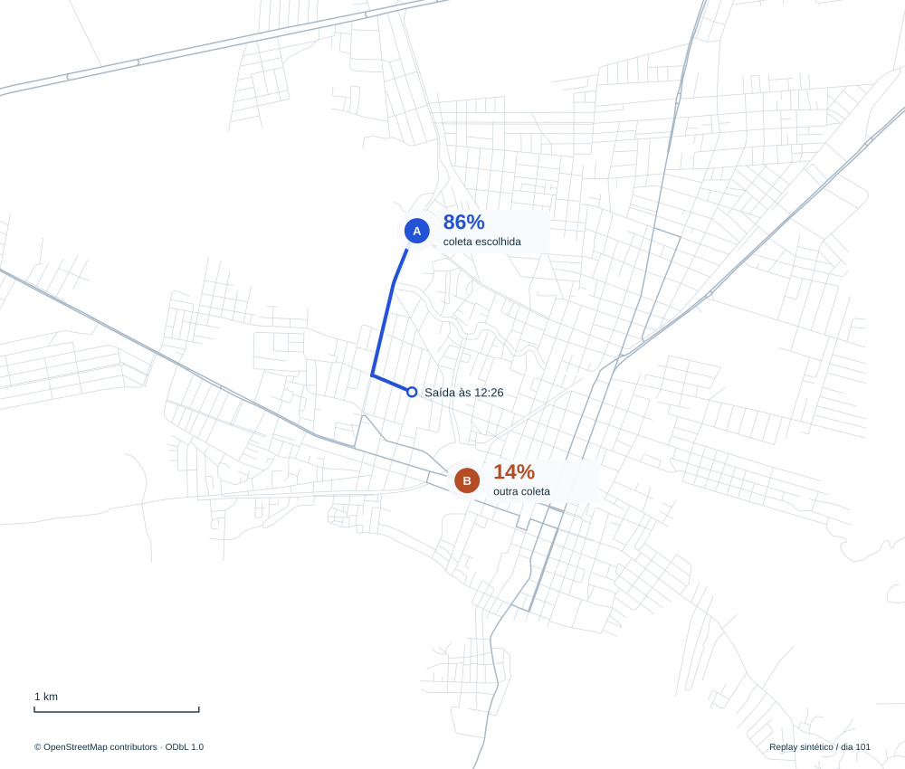
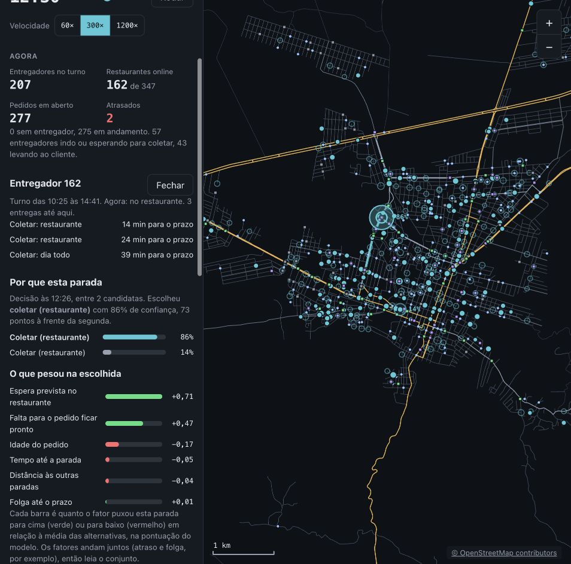
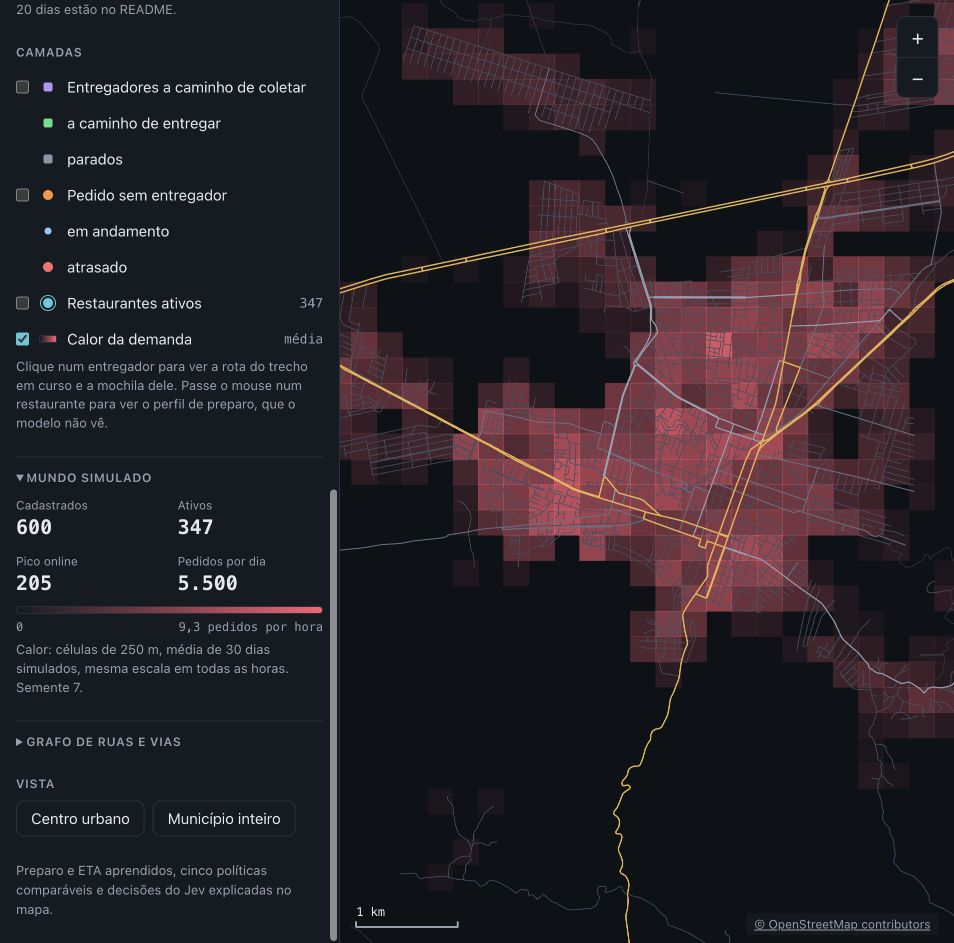
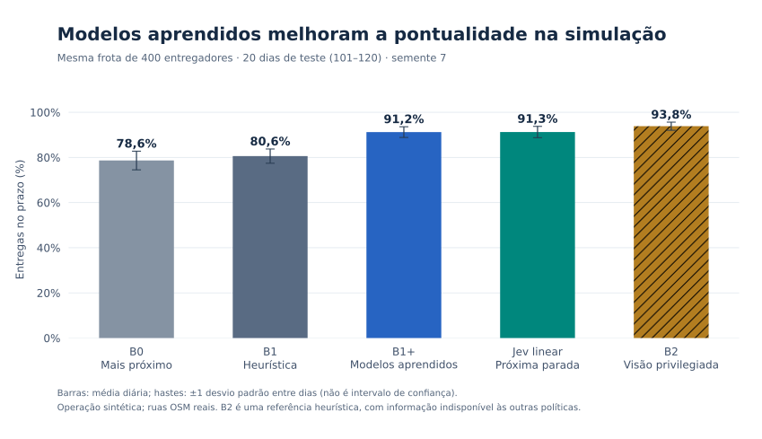
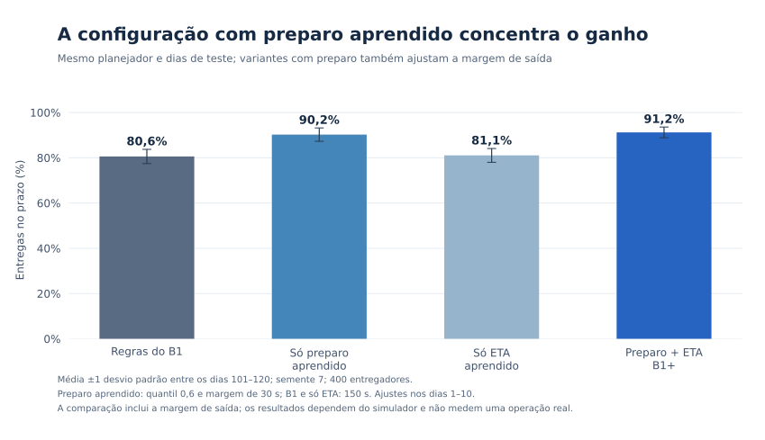
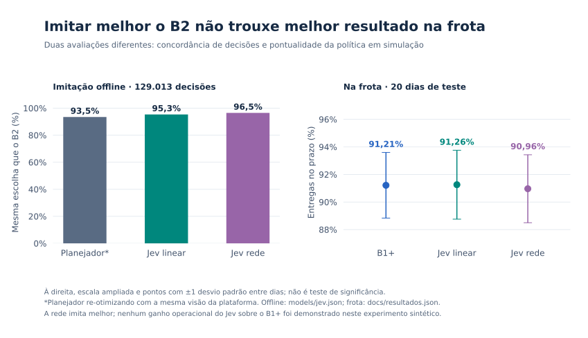

Itapipoca, Ceará
Cinco jeitos
de entregar.
Um simulador de frota nas ruas de Itapipoca. Cinco políticas de despacho, medidas com os mesmos pedidos.
As ruas são do OpenStreetMap. Pedidos, restaurantes, entregadores e trânsito são simulados.

Um projeto de Juan Severiano.
20 dias de teste. 400 entregadores. Experimento reproduzível.
Mesma cidade.
Outras decisões.
A comparação parte da regra do entregador mais próximo e chega a um planejador que conhece o preparo e o trânsito verdadeiros do simulador.
Médias dos dias 101 a 120, no mundo de semente 7. O desvio mostra a variação entre dias; não é intervalo de confiança.
- B0O mais próximo
- 78,6%± 4,1 p.p.
- B1Inserção e 2-opt
- 80,6%± 3,2 p.p.
- B1+Preparo e ETA aprendidos
- 91,2%± 2,4 p.p.
- JevA próxima parada explicada
- 91,3%± 2,5 p.p.
- B2Informação privilegiada
- 93,8%± 1,8 p.p.
No prazo, entre os pedidos entregues. Cada política recebeu 106.401 pedidos: 105.511 entregues e 890 sem entrega. B2 usa a mesma heurística com informação privilegiada; não é o ótimo global. Consultar os dados por dia.
A espera na cozinha
mudou o resultado.
O B1 usa uma estimativa fixa de preparo. Com a previsão aprendida, a pontualidade chegou a 90,2%. A variante só com tempo de viagem ficou em 81,1%. Com os dois modelos, 91,2%.
- Só preparo aprendido
- 90,2%
- Só ETA aprendido
- 81,1%
- Preparo e ETA
- 91,2%
A configuração com preparo também muda a margem de saída de 150 para 30 segundos e usa o quantil 0,6, ajustados nos dias 1 a 10. Essa comparação inclui os ajustes; não isola o efeito do modelo mantendo a margem fixa.
Já o Jev linear imitou 95,3% das escolhas do B2, mas não demonstrou ganho na frota sobre o B1+. A rede imitou melhor, com 96,5%, e ficou em 91,0% no prazo. A versão linear ficou como a opção explicável.
Dá para olhar
cada escolha.
Às 12:26, o entregador 162 tinha duas coletas candidatas. O Jev escolheu uma com 86% de probabilidade. No mapa, você vê as alternativas e quanto cada fator pesou na pontuação.
Abrir a decisão do entregador 162



A explicação descreve a pontuação do modelo, não uma relação de causa e efeito no mundo real. A probabilidade de escolha não é a chance de entregar no prazo. Como estas capturas foram feitas.
O que foi medido.
E até onde vale.
O experimento roda em um mundo sintético sobre 7.288 cruzamentos de Itapipoca. Os modelos aprendem esse gerador; os resultados não foram validados em uma operação comercial ou em outra cidade.
Ler a metodologia completaDivisão dos dados e comparação
- Planejador ajustado nos dias 1 a 10. Preparo e ETA treinam nos dias 21 a 60 e validam nos 61 a 70.
- Jev treina com decisões do B2 nos dias 21 a 50 e valida nos 61 a 65. Todos são avaliados nos dias 101 a 120.
- As políticas recebem os mesmos pedidos e a mesma frota. A pontualidade considera os entregues; os 890 sem entrega são contados à parte.
- A mochila comporta até três pedidos. Um mundo, semente 7. O desvio entre dias não comprova superioridade nem equivalência estatística.
Os três gráficos completos



Código, modelos e reprodução
Python e NumPy no simulador e na inferência. Rede, perdas, Adam e laço de treino implementados no projeto; PyTorch fornece tensores e autograd. React, TypeScript e canvas no mapa.
O mapa público lê um replay congelado do dia 101. Não treina modelos no navegador. A primeira abertura carrega cerca de 17 MB de dados descompactados.
O README tem os comandos para executar o laboratório. Os modelos ficam em models/ e as métricas diárias em resultados.json. O mapa desta página pode ser regenerado com python3 scripts/render_portfolio_map.py.